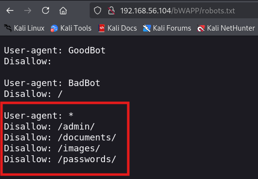

구글과 네이버 같은 검색 엔진들은 대부분 웹 로봇을 이용하여 웹사이트의 정보를 수집하게 됨.
웹 로봇 역시 크롤러의 일종임
웹사이트 관리자는 robots.txt 파일을 웹사이트의 가장 상위 디렉터리에 위치시켜, 웹 로봇에게 해당 웹사이트의 정보 수집을 허용하거나 불허하는 명령을 내릴 수 있음
.

이런 식으로 중요한 디렉터리 파일 위치 경로가 노출됨
*라는 특수문자 표시는 [모든 로봇들에게 명령을 내릴 수 있다는 뜻]
Disallow 키워드는 설정된 경로 (하위 디렉터리 포함)에 대한 수집을 차단하겠다는 명령이다
Allow는 수집을 허용할 때 쓰는 키워드다
파일의 내용은 다음과 같음
GoodBot 로봇의 수집을 불허하지 않는다 왜냐? 착한 목적으로 인식하니까 불허하지 않겠지
BadBot 로봇의 대상으로는 모든 페이지 수집을 불허함
/admin, /documents, /images, /passwords 디렉터리에 대한 수집은 모든 로봇을 불허함
아무리 잘 구현해도 그 내용을 따를지는 전적으로 웹 로봇에게 달려 있음.
합법적인 로봇은 일반적으로 robots.txt의 내용을 준수하여 수집을 진행하지만
악의적으로 제작된 로봇은 내용을 무시하고 Disallow 키워드로 차단한 내용을 정보 수집에 이용할 수 있음.
TIP
- robots.txt 파일의 내용을 확인하여 경로에 대한 정보를 수집할 수 있음
모의해킹 정보 수집 과정에서도 robots.txt 파일의 내용을 확인해 일부 경로 정보를 알아낼 수 있음
위에 /admin, /document, /images, /passwords 등의 디렉터리 존재 가능성을 알 수 있음
1. 기존 웹 애플리케이션 매핑을 보완해 줄 수 있음
2. 간혹 수동 매핑을 통해서 접근할 수 없는 경로를 알아내기도 함
robots.txt를 통해 웹사이트가 위험에 노출될 수 있음